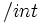

Neperiano
 De: La Frikipedia, la enciclopedia extremadamente seria.
De: La Frikipedia, la enciclopedia extremadamente seria.

|
La información contenida en este artículo es una mínima parte de su jugo total, así que ponte los guantes, saca el tupperwere y empieza a exprimir el tema. Si lo haces serás recompensado con una galleta en almíbar y algo más.
|

|
Este artículo necesita ser ilustrado. Busca una afoto en nuestro depósito de imágenes o donde sea y ponla, pero que no sea pr0n, que se cabrea el señor del adSense y nos corta el grifo de los dólare. Y sin dólare no hay servidor...
|
| De la serie Elementos químicos:
|
| [[Image:{{{muestra}}}|200px|Muestra de Neperiano]]
|
|
| Nombre oficial:
|
Neperiano
|
| Otros nombres:
|
Logaritmio
|
| Serie alquímica:
|
Alternancínidos
|
| Descubridor:
|
René Descartes
|
| Color en tabla:
|
Transparente
|
| Presente en:
|
Matemáticas
|
| Usos:
|
Hacer las cosas más difíciles
|
| Estado:
|
Etéreo
|
| Peso kg/puñao:
|
Negativo
|
| Estructura:
|
Deforme
|
| Abstracción:
|
Teoricamente nula, prácticamente imposible
|
| Humungoso:
|
Metiendo los dedos en el enchufe
|
Habitante de Nepe, provincia de HuelvaElemento número 93 de la Tabla Periódica y parte de los dígitos hexadecimales. Descubierto por el irlandes Nepo el barbaro (1992-1830)
En realidad el Nepario no nos sirve en lo absoluto. Puede tenerse como adorno serca de la cama de los niños para que los irradie de energía negativa y con esto forme villanos cabezones y calvos (con suerte el pigmento de su piel tomará el color de sus eses).
Si bien pudemos adjudicarle algun huso, sería el de estorbar a los demás, algo así como una roca, o el abuelo.
Características
Los Neperianos no tienen características, simplemente desexponencian cosas. Para poder identificarlos se percibe el fresco aroma a muerte flores que supura por la parte superior. Comunmente sus inexistentes características hacen imposible su localización por lo que (por lógica) entendemos que se ha terminado.
El estudio de tal elemento es igual de necesario que el de husmearse la nariz introduciendo primero el dedo indice izquierdo. Los resultados de las investigaciones an sido los siguientes:
| Compuesto |
Símbología |
Propiedades
|
| Infinito neperiano |
|
Es cerapio.
|
| Truño neperianoso |
KK |
Se le llama diarrea.
|
| Pentaneperianato de Lero |
-€ |
Se le llama pobreza.
|
| Rústiquinol neperóxido |
IVXLCDM |
Son los Números romanos
|
Reglas matematicoquímicas
Por si fuera poco se agrega otro huso sin relevancia alguna, las atemáticas. Esto con el fin de combertir el ya aburrido elemento en el menos husado por los humanos, esto pora evitar la joroba de no encontrarse con él devido a sus inexistentes caractreísticas. Eso o solo es que uno, de entre tantos elementos, tenía que ser aburrido.
- Un neperiano múltiplicado por si mismo se suma.
- Y dividido, se resta.
- Sumado, se dejá como está.
- Restados entre sí, son siempre cero.
- Los neperianos no se integran; si ven al símbolo  lo erradican de la ecuación.
- Los neperianos estan en el puto medio de la Tabla periódica pero aún así son practicamente gases nobles (también provocan gases nobles).
- son todos los números menos X.
Autor(es):
- Nexo
- Hari Seldon
- Haakjvork
- Doctor grijander
- Cañonero
- Lance Bean
- Frikiman
- Thabita
- Veni Vidi Vici
- The jazziest
Frikipedia 2005-2016, Licencia
GFDL 1.2 - Extraído por FrikiLeaks